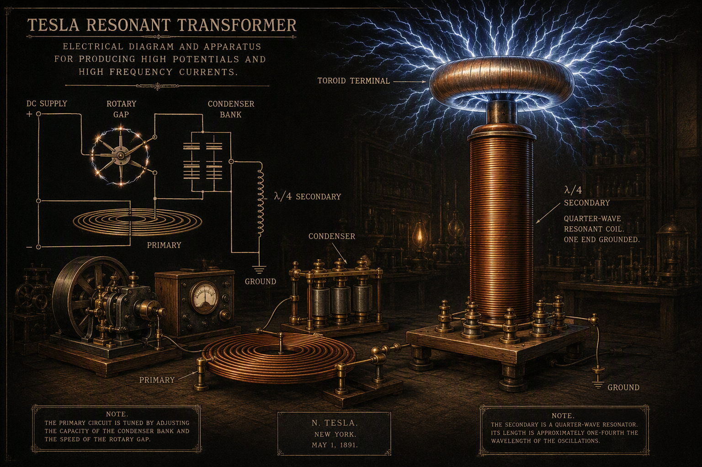
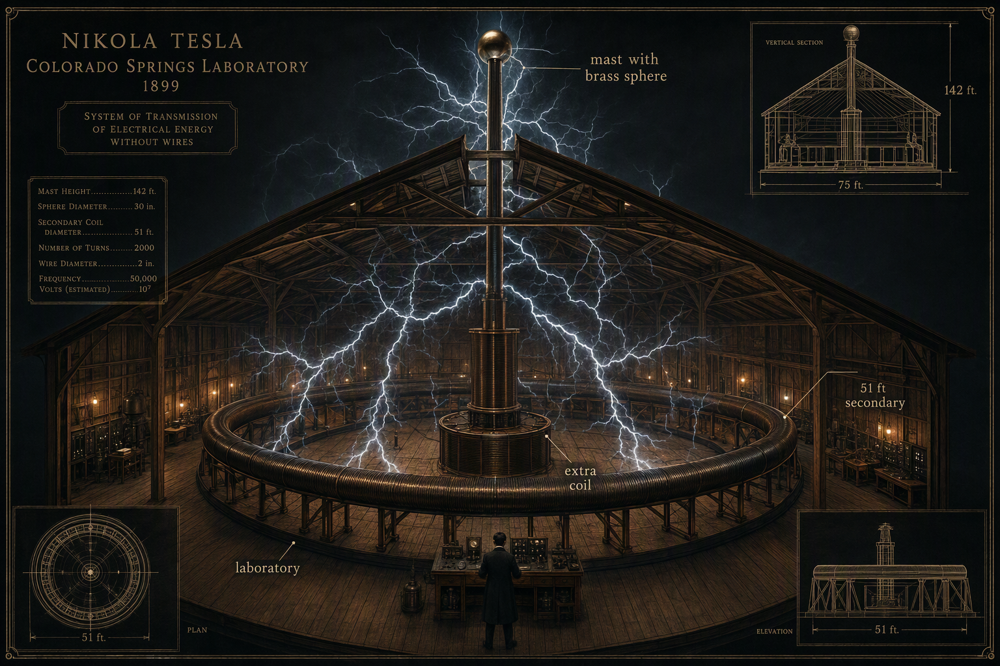
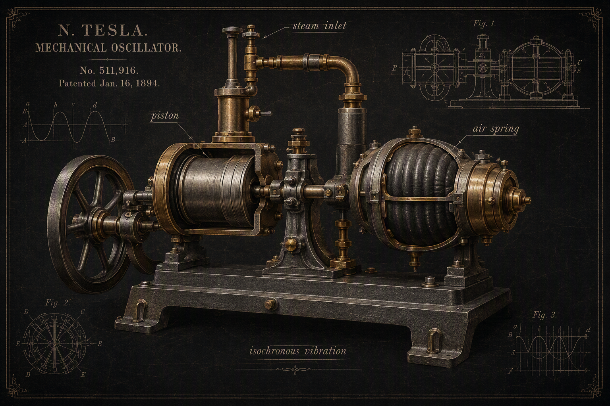
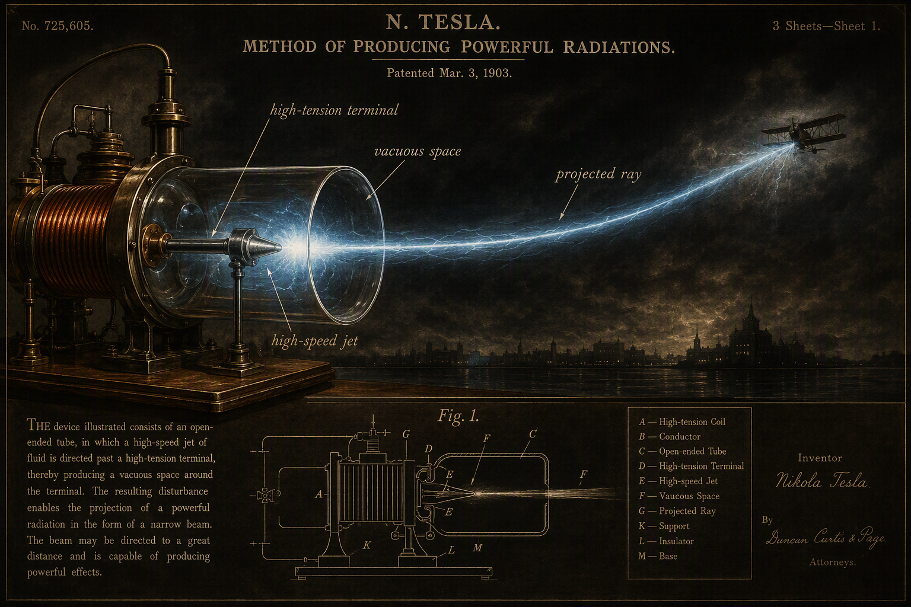

The Vault
January 1943: the seizure Documented
The FBI vault file on Tesla runs in three parts — Part 01 (249 pp.), Part 02 (pp. 250–290), and Part 03 (64 pp., “Final,” released March 2018 via FOIA to MuckRock).1 The early pages of Part 03 carry the Foxworth-era memoranda of January 1943. A January 9 memo (SA Fred B. Cornels) records informant Abraham N. Spanel alleging that Tesla’s nephew Sava Kosanović entered the room and broke into the safe; that Bloyce Fitzgerald reported Tesla calling his wireless power and ray experiments “completed and perfected”; that there was “a revolutionary type of torpedo” and “a working model… which cost more than $10,000” in a safe-deposit box; that there were “some 80 trunks” of manuscripts. Spanel added that “Dr. D. Lozado, one of the advisers to Vice President Wallace,” called the government “vitally interested” in wireless power and the “death ray.” A January 8 memo records a New York Times reporter urging that the papers be impounded. A January 7 NYPD complaint card records the death itself: D.O.A., Room 3327, no espionage indication.2
The custody question matters because the legend gets it wrong: the trunks were held by the Office of Alien Property, citing the Kosanović risk and the teleforce claims — the FBI never held the papers, and later memos say so explicitly.
The John G. Trump report Documented
On January 26 and 27, 1943, the technical papers were examined. The participants, per the catalog cover of “Abstracts of Dr. Nikola Tesla’s Writings Retained as Exhibits for the Alien Property Custodian”: Mr. John C. Newington (APC New York); Mr. Charles J. Hedetniemi (APC Washington); Dr. John G. Trump, Office of Scientific Research and Development, MIT; Willis George, Office of Naval Intelligence; and Chief Yeomen Edward Palmer and John J. Corbett, USNR. The report appears in Part 01 at p.178ff and again in Part 03 at ~p.40ff.2
The notable exhibits, verbatim:
- Exhibit I — an undated memo after Tesla’s 79th birthday describing “a dynamic theory of gravity” (unfinished) and the claim that “there is no energy in matter other than that received from the environment” — Tesla disbelieved atomic energy.
- Exhibit J — “A Method of Producing Powerful Radiations”: “my new simplified process of generating powerful rays consists in creating through the medium of a high-speed jet of suitable fluid a vacuous space around a terminal of a circuit and supplying the same with currents of the required tension and volume.” This is the teleforce principle — the “death ray.”
- Exhibits M/W — “The Power of the Future”: atomic power “not feasible”; but “with my wireless system, it is practicable to transmit electrical energy at a distance of twelve thousand miles with a loss not exceeding 5 per cent.”
Trump — MIT electrical engineer, and as it happens the uncle of a future president — found the apparatus to be “standard electrical measuring instruments in common use several decades ago.” The Governor Clinton Hotel safe-deposit “mystery device,” said to be a working model, resolved to an antique Wheatstone-bridge resistance box. A 1961 FBI letter to the Department of Defense summarized the standing conclusion: nothing of significant value.
Aftermath: Belgrade, 1952
Later memoranda record 1945 Army interest, Kosanović’s 1950 microfilm request, and the eventual disposition: the material was microfilmed and shipped to Belgrade in 1952, where ~60 trunks became the core of the Nikola Tesla Museum — 160,000+ documents, inscribed on UNESCO’s Memory of the World register in 2003.3 The trunk-count discrepancy (80 alleged vs. 60 received) keeps speculation alive; claims of secretly retained or weaponized designs — “Project Nick,” Wright-Patterson — are Unverified conspiracy literature. No withheld breakthrough has ever surfaced. The pre-2016 compilation also includes a February 12, 1937 letter to Hoover from a civilian suggesting Tesla’s induction coil explained air crashes, and a September 22, 1940 “Death Ray for Planes” clipping — context, not findings.
The Patents — Frequency & Resonance
Six patents, verified at full text, constitute Tesla’s documented science of resonance.4
| Patent | Title & year | The principle |
|---|---|---|
| US 514,169 | Reciprocating Engine (1894) | The mechanical oscillator: piston against an air spring giving isochronous vibration “like a pendulum” — basis of the 1898 telegeodynamics demonstration (the “earthquake machine” story is secondary, via O’Neill). |
| US 568,176 | Apparatus for Producing Electric Currents of High Frequency and Potential (1896) | The disruptive-discharge oscillator: DC mains → choking coils → rotary circuit controller → condenser discharged across the break through the transformer primary. “The frequency of the discharge-current may be adjusted at will.” |
| US 593,138 | Electrical Transformer (1897) | The resonant flat-spiral transformer: secondary length ≈ one-quarter wavelength of the circuit disturbance. Example given: propagation 185,000 mi/s at 925 Hz → 200-mile wavelength → 50-mile secondary. |
| US 609,245 | Electrical Circuit Controller (1898) | A mercury-jet make/break switch flung centrifugally — very high interruption frequency with minimal arcing. (Mercury vapor hazard; do not replicate — see Folio VI banner.) |
| US 787,412 | Art of Transmitting Electrical Energy through the Natural Media (1905, filed 1900) | The Earth standing-wave patent, from the Colorado Springs observations. Requirements: Earth’s polar diameter an odd multiple of the quarter wavelength; frequency below ~20 kHz — “the lowest frequency would appear to be six per second”; wave train ≥ 0.08484 s — the time for a surface transit to the antipode and back (~40,000 km at Tesla’s assumed 471,240 km/s, i.e. (π/2)·c: a surface phase velocity, not a signal speed, as the examiner noted in 1903). |
| US 1,119,732 | Apparatus for Transmitting Electrical Energy (1914, filed 1902) | The magnifying transmitter / Wardenclyffe terminal: grounded resonant circuit, elevated toroidal terminal suppressing corona; mistuning can cause “a ball of fire… many millions of horse power.” |
The machines, plated




Colorado Springs
The laboratory, June 1899 – January 1900 Documented
The Colorado Springs Notes (ed. Marinčić & Popović, Nolit 1978) record the build and the aims: powerful transmitters, individualized transmission, the laws of propagation through earth and atmosphere.5 The machine: a 110-ft-square laboratory; a 50 kV Westinghouse supply transformer; a Leyden-jar capacitor bank; a 2-turn primary; a 24-turn secondary 51 ft in diameter; an extra coil ~12 ft × 8 ft of 100 turns; a 30-inch brass ball on a 142-ft mast. The band ran ~45–150 kHz, potentials 3.5–4 MV, discharges over 100 feet, thunder audible 15 miles away — and, once, the municipal generator blown out.
July 3, 1899: the standing waves

With the receiver grounded and a storm moving away over the plains, the signal waxed and waned with ~30-minute periodicity. Tesla’s diary: “It showed clearly the existence of stationary waves… It is now certain that they can be produced with an oscillator. [This is of immense importance.]” Measured wavelengths: 25–70 km. In 1904 he called it “the first decisive experimental evidence of a truth of overwhelming importance.”
The honest verdict splits. The observation was real; the attribution was wrong — amplitude beats of natural lightning energy under skywave/groundwave interference, not Earth eigenmodes. Yet the intuition that the Earth possesses EM eigenmodes in the single-digit hertz range was vindicated fifty years later, in the ionosphere-cavity sense: the Schumann resonances. Tesla’s own Earth-frequency computations ranged ~6.8–11.78 Hz; the popular “~8 Hz = Schumann 7.83” mapping is retrospective, and his medium differed. The engineering scheme — tens of thousands of horsepower broadcast at <5% loss over 12,000 miles — is Refuted as physics: cavity Q ≈ 4–6, negligible coupling of a small transmitter to global modes, mode energy ~1 pT, and no concentrating mechanism at the receiver.
And the “interplanetary signals”: Tesla believed he had received patterned transmissions — his Red Cross letter of 1900 reads, “Brethren! We have a message from another world… It reads: one… two… three.” Natural origin is the accepted reading; the archive files it as a caution about pattern hunger at the edge of a new instrument.
The Quote Authenticity Audit
| The quote | The verdict | Grade |
|---|---|---|
| “If you want to find the secrets of the universe, think in terms of energy, frequency and vibration.” | Traced to Ralph Bergstresser, a Tesla-purple-plate vendor claiming a 1942 conversation. Disputed on Wikiquote; no period source. | Apocryphal |
| “If you only knew the magnificence of the 3, 6 and 9…” | Internet-era only; the Nikola Tesla Museum holds no record.6 | Apocryphal |
| “The day science begins to study non-physical phenomena…” | No source located; circulates unattributed until the internet era. | Unverified |
| “Earth is a realm…” | Flat-earth-era fabrication in Tesla’s name. | Fabricated |
| “The Earth is responsive to electrical vibrations of definite pitch just as a tuning fork to certain waves of sound.” | My Inventions, 1919 — documented. | Documented |
| “The earth has replied… a stationary electrical wave, a wave reflected from afar.” | 1927 statement — documented. | Documented |
Method: verify against period publications, the museum corpus, and the vault file — in that order. A quote with a provenance ending at a merchandise vendor is a misattribution, whatever its fame.
- FBI Vault, Nikola Tesla (Parts 01–03): vault.fbi.gov/nikola-tesla; Part 03 released March 2018 via FOIA to MuckRock: muckrock.com/news/archives/2018/mar/19/fbi-tesla-ii/. ↩
- Foxworth memoranda, Jan. 7–9, 1943, and the Trump report “Abstracts of Dr. Nikola Tesla’s Writings…” — FBI Vault Tesla Part 01 p.178ff and Part 03 p.40ff (page location via third-party PDF analysis; mirror at nikolateslalegend.com). ↩
- Nikola Tesla Museum, Belgrade; UNESCO Memory of the World (2003). Overview: teslauniverse.com. ↩
- Patent full texts: teslauniverse.com and patents.google.com (US 514,169; 568,176; 593,138; 609,245; 787,412; 1,119,732). ↩
- Tesla, Colorado Springs Notes 1899–1900 (Nolit, 1978). Context and verification: IEEE Milestone proposal: Tesla 1899. ↩
- “3, 6, 9” provenance check: truthorfiction.com; quote databases: todayinsci.com. ↩